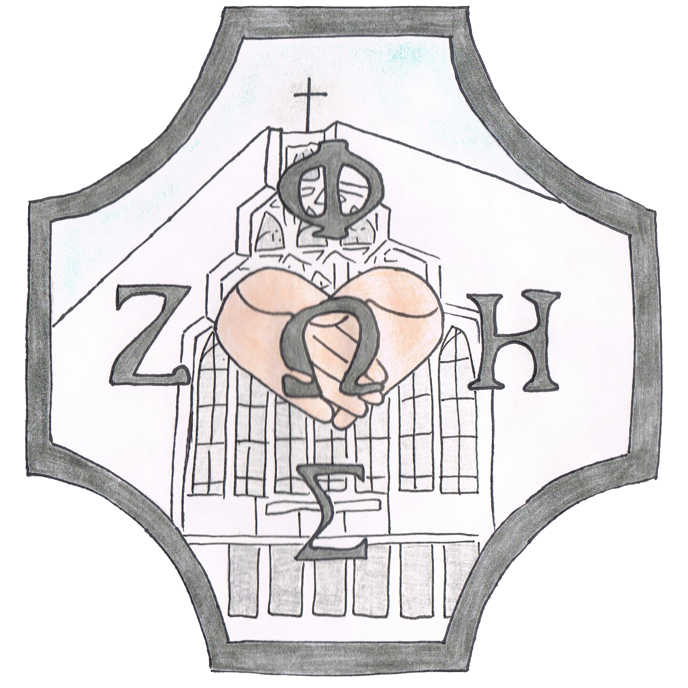
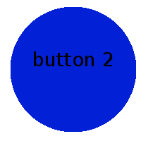
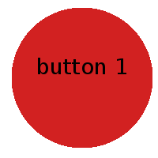

header - tutaj jakieś zdjęcia. kopiując pomysł innej strony, losowe i zmieniające się co jakiś czas :P
plus ofc napis czyja to strona
  
tutaj mam pomysł na zapchanie dziury zdjęciami - ale nieszablonowymi ;)